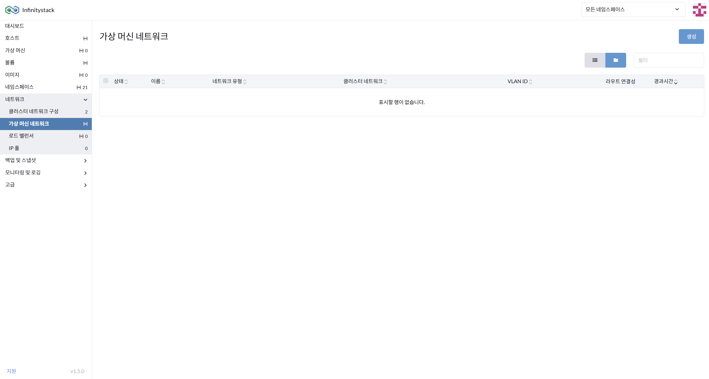
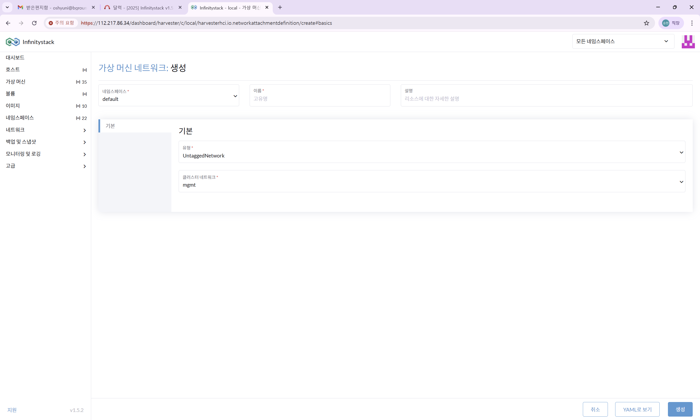
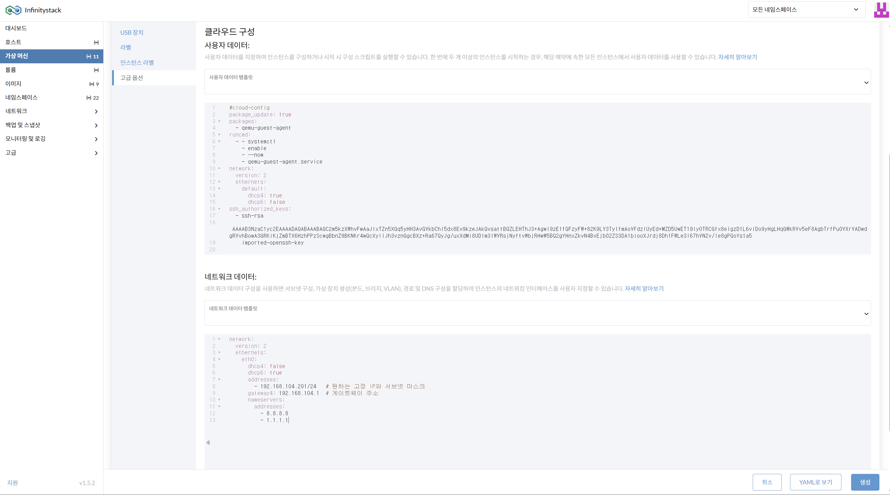

Static IP 할당
Infinitystack 네트워크 구성 (Static IP 할당)
Static IP 할당 예시
아래는 전형적인 Static IP 할당 구성입니다.
| Name | Static IP | VLAN ID | 용도 |
|---|---|---|---|
| HCI VIP | 172.21.1.13 | 1 | HCI Management |
| hci01 | 172.21.1.10 | 1 | HCI Host |
| hci02 | 172.21.1.11 | 1 | HCI Host |
| hci03 | 172.21.1.12 | 1 | HCI Host |
| VM#1 ~ VM#n | 172.21.1.14 ~ 172.21.1.X | 1 | 가상머신(VM) n개 만큼 |
| Storage Network | 172.21.200.0/24 | 200 | Storage |
Untagged (Static IP) VM 네트워크 생성
경로: 네트워크 > 가상머신 네트워크
Management 정보의 기본값을 설정합니다.
화면


절차
- 가상머신 네트워크를 생성합니다.
- 네임스페이스 선택:
default - 가상머신 네트워크 이름 입력:
vlan1-net -
기본 항목 입력:
항목 값 유형 UntaggedNetwork 클러스터 네트워크 mgmt 참고
호스트의 관리 네트워크와 동일하게 사용하게 됩니다.
VM에서 Static IP 할당 (Cloud-Init)
경로: 가상 머신(VM) > 클라우드 구성 / 네트워크 데이터
화면

절차
-
가상머신에 고정 IP 할당을 위한 고급옵션 설정에서 네트워크 데이터를 작성합니다.
지원 제한
Cloud-Init을 지원하는 VM만 설정 가능합니다.
Windows는 VNC 콘솔로 로그인 후 수동으로 직접 설정해야 합니다. -
Cloud-Init yaml 작성 예시:
version: 1 config: - type: physical name: eth0 # rocky: eth0 / ubuntu: ens0.., enp1s0.. subnets: - type: static address: 172.21.1.14/24 gateway: 172.21.1.1 dns_nameservers: - 8.8.8.8OS별 인터페이스 이름
- Rocky Linux:
eth0 - Ubuntu:
ens0..,enp1s0..등
- Rocky Linux:
-
작성 후 생성합니다.
DHCP와 혼용 시 주의
L3 Switch의 DHCP Server와 혼용해서 사용한다면 IP 충돌 방지를 위해 IP 목록 관리와 DHCP 예외IP 관리를 반드시 설정해야 합니다.